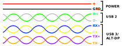
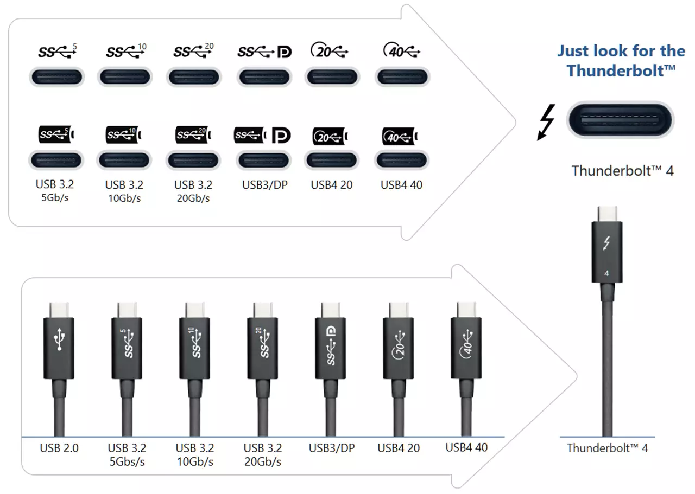
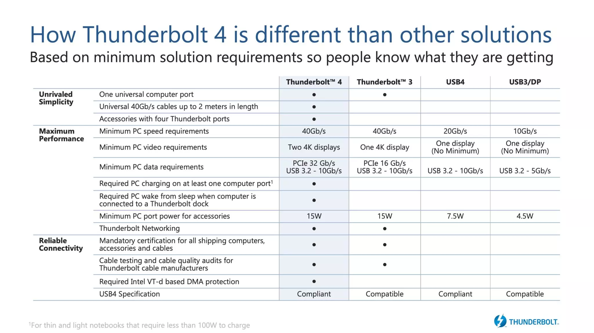

For decades, my perception of USB was that of a technology both simple and reliable. You plug it and it works. The two first iterations[1][2] freed PCs from a badly fragmented connector world made of RJ-45 (Ethernet), DA-15 (Joystick), DE-9 (Serial), DIN (PS/2), SCSI, and DB-25 (Parallel).
When USB-3.0 came out, USB-IF had the good idea to color code its ports. All you had to do was to "check for blue" in the chain to get your 5 Gbit/s. Even better, around the same time were introduced type-C connectors. Not only the world was a faster place, now we could plug things with one try instead of three.
Up to that point in time, it was a good tech stack. Yet in 2013 things started to become confusing.
With USB 3.1 the bandwidth doubled to 10 Gbit/s. But USB-IF called it "USB 3.1 Gen 2" with the "old" USB 3.0 to be refereed to as "USB 3.1 Gen1". They did it again in 2017 with what people would have liked to be "USB 3.2". We got 20 Gbit/s except it was to be called "USB 3.2 Gen 2x2". Accordingly "USB 3.1 Gen 2" became "USB 3.2 Gen 2x1" and "USB 3.1 Gen 1" was renamed "USB 3.2 Gen 1x1".

USB-3.X cables features 8 wires[3]. Two of then are for power and the other six carry data. Two data wires are dedicated to USB-2 legacy traffic while the other four are for USB-3.X SuperSpeed transfer.
In 2014, VESA had the idea to re-purpose some of the wires and published "DisplayPort Alternate Mode" specs[4]. Display Port signal could now be carried over 1, 2, or 4 of the 3.X wires (calling them lanes).
It works fine as long as one or two lanes are used for DP 1.2. But to display a 4K60Hz image, DP 1.2 bandwidth requirements demands to use all four lanes which leaves only two USB-2 wires for data. This leaves a lot of "implementation dependent" behavior up to people who build USB hubs.
Thanks to DP 1.4, the bandwidth requirement can be lowered via DSP lossy compression. This allows 4k60Hz on two lanes with lanes available for USB-3.X traffic but it can be tricky to discover which hub can do DP 1.4.
USB-2 provides up to 2.5W. USB-3 brings it to 4.5W and USB-3.2 takes it to 7.5W. In what I assume was an effort to accommodate vendors who wanted to build chargers, USB-IF published standalone power protocols.
There is USB-BC (Battery Charging) v1, v1.1, and v1.2. Then came USB-PD (Power Delivery) v1, v2, and v3.
Which USB-PD version is included in each USB-X "core" specs is something I did not take the time to establish but I would expect it to be non-trivial.
On top of these open specs exist a myriad of proprietary cell-phones "fast charging" protocols. Motorola has "Rapid Charging" and "Turbo Power"[5]. OnePlus has "Dash Charge" / "Warp Charge" while Realme have "Dart Charge" (both based on VOOC 2.0, VOOC 3.0, SuperVOOC, VOOC 4, or SuperVOOC 2.0[6]). Finally Qualcomm phone have "Quick Charge"[7] v1, v2, v3, v4 and v4+.
| USB4 Feature | Host | Hub | Peripheral |
|---|---|---|---|
| USB 2.0 (480 Mbit/s) | Yes | Yes | Yes |
| USB4 20 Gbit/s Transport | Yes | Yes | Yes |
| USB4 40 Gbit/s Transport | ? | Yes | ? |
| Tunneled USB 3.2 (10 Gbit/s) | Yes | Yes | ? |
| Tunneled USB 3.2 (20 Gbit/s) | ? | ? | ? |
| Tunneled Displayport | Yes | Yes | ? |
| Tunneled PCI Express | ? | Yes | ? |
| Host-to-Host communications | Yes | Yes | N/A |
| DisplayPort Alternate Mode | Yes | Yes | ? |
| Thunderbolt Alternate Mode | ? | Yes | ? |
| USB-C Alternate Modes | ? | ? | ? |
The USB world has reached a complexity level which exceeds the amount of time I can dedicate to understanding it.
While I was researching USB hubs, I kept on running into their Thunderbolt-3 counterparts which seemed not only superior in capabilities but also far simpler.
The advertisement flier from Intel sums it up. Thanks to "minimum solution requirements", customers "know what they are getting".
|  |  |
{kind=link}
{kind=link}
{kind=link}